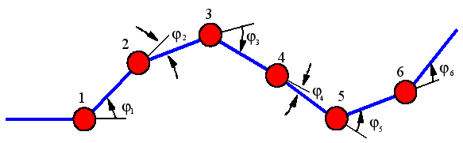

|
Paper 13: ”Evaluation of a locomotion algorithm for worm-like robots on FPGA-embedded processors ” |
|
 |
J. González-Gómez, I. González , FJ. Gómez-Arribas and E. Boemo,”Evaluation of a locomotion algorithm for worm-like robots on FPGA-embedded processors” , International Workshop on applied reconfigurable computing. ARC2006. Delft, the Netherlands, March 2006.
In this paper, a locomotion algorithm designed for an eight modules worm-like robot has been successfully tested on three different FPGA-embedded processors: MicroBlaze, PowerPC and LEON2. The locomotion of worm-like robots, composed of a chain of equal linked modules, is achieved by means of wave propagation that traverse the body of the worm. The time the robot needs to generate a new motion wave, also known as the gait recalculation time, is the key to achieve an autonomous robot with real-time reactions. Algorithm execution time for four different architectures, as a function of the total number of articulations of the robot, are presented. The results show that a huge improvement of the gait recalculation time can be achieved by using a float point unit. The performance achieved using the LEON2 with FPU is 40 times better than LEON2 without FPU, using only 6% of additional resources.
|
Poster: [PDF] [OpenOffice] |
|
Files for downloading |
|
arc-cube-2006.pdf (220 KB) |
Paper in PDF format |
|
arc-cube-2006.zip (473 KB) |
Lyx sources and figures of the paper |
|
ARC2006-poster.pdf (943 MB) |
Poster in PDF format |
|
ARC2006_poster.sxi (1.0 MB) |
Poster for OpenOffice 2.0 |
The references of the paper are avaible here
|
|